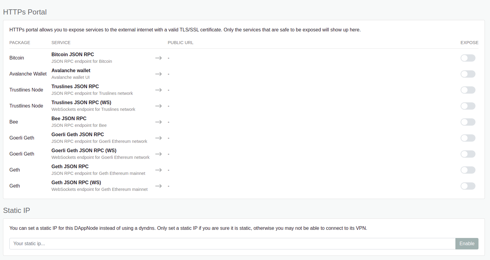

System View
This area is used to configure and manage your system with different options that will be progressively released. This page has several tabs where you can collect information about your machine and modify some configurations.
Information
In this section you can see the general metrics of your machine:
- Statistics of your machine: RAM usage, Disk Space and CPU usage.
- Volumes: The volumes of your DAppNode and how much space they occupy.

Notifications
In case you want to set up telegram notifications, this view let you use a telegram bot to show the DAppNode message in telegram.

If you are interested in enable this kind of notifications, we recommend you follow this guide how to set up telegram notifications on DAppNode.
Auto-Updates
You can now choose if you want your packages to be automatically updated by enabling these option for System Packages, installed packages, or both. Please note that tthe updates will be made 24 hours after the updated package availability is detected.
This feature is valid for non major updates, in which an admin intervention will always be needed.

Repository
You can find a more detailed information on the section select a type of client. It's important to understand the pros and cons of this decision. This view is the same that you saw in that step.

Here you can choose several options:
- Use a Remote client of Ethereum: your dappnode machine will use the "DAppNode's ethereum node.
- Use a Light client of Ethereum: your dappnode machine will use a light client of ethereum for communicating with Ethereum.
- Use a Full Node: your dappnode machine will have an Ethereum node and will be full independent from anothers.
- OPTION Use remote during syncing or errors: it's and option, let you to use a remote node in case your ethereum node is syncyng or it is affected by an error.
As we said before if you want to know the pros and cons of this decisions, we recommend you to read select a type of client section.
Network
In the network section we can do some technical stuff:
- IP**: usually, the IP we have in our houses are dynamics, so we have not a IP, because of this situation, DAppNode uses DynDNS, DynDNS associates an IP to a direction like 0773a23d34aed273.dyndns.dappnode.io, for example. It's necessary to use a direction to run some services, DynDNS is the solution to this problem. If your IP is for any reason, and you don't want to use DynDNS, you can set up with this field.
HTTPs Portal: to see this option you need to install de HTTPS package. Here you can expose services using the protocol HTTPS. What does it mean? If you expose for example geth, you expose your geth RPC to the Internet, so you can use metamask from anywhere. You have to be careful with his feature. In this section we have listed the services we "recommend" or we think is interesting to expose to.

Profile
Here you can modify the password that is required to access to the UI.

Peers
This section is about IPFS peers. You can find more detail information about this on add ipfs peers, there you can know more about what is IPFS, why is important to add peers, etc.

On this view, we can do two thing:
- Share IPFS peer: obtain a link of our IPFS, so we can share it with people to stay connected.
- Add IPFS Peer: here you can paste the link of another user to stay connected.
Security
It shows some security checks of your DAppNode.

Advanced
The advanced area collect many different functionalities
Change DAppNodeName
You can change the name that appears on the UI on the top right. It's only a visual change, so it's not a sentitive modification.

For example, if we type that name and click on the button Change dappnode Name, the name will be what we wrote on the field.

SSH
The following space let the user manage the ssh configuration of his DAppNode. You can:
- Enable/disable SSH:
- Check SSH State:
- Check what port ssh is using:
- Change SSH port:

Check SSH status
You can check if SSH is enabled by clicking the Fetch Status button. In case the ssh is enabled you will see the word enabled on the field.
Enable/Disable SSH
You can enable/disable the ssh of your dappnode machine, click on the respective button below.
Check what port use the dappnode for ssh
To check what port is using your DAppNode for SSH connections, you can find it out by clicking on the Fech port button.
Change SSH port
If you want to change the port DAppNode use for ssh , you can change it by typing the number you want to use and pressing the Change button.
Docker update
This configuration is so sensitive. Here you can update the docker version of your DAppNode. We refer to docker-compose and the docker engine.

In case you want update docker versions, you must update the docker compre first, and after the docker engine.
Update Docker Compose
You have to click on the Check requirements button. Two things can happen:
- Docker compose is updated message, and you dont have to do anything.
- There is a new version message, and you can update clicking on the button.
Update Docker Engine
You have to click on the Check requirements button. Several checks will be done and if you need or can update you could do it.
Clear cache db
Remove the local cache of Aragon Package Manager (APM) entries, manifests, avatars. Also remove the user action logs shown in the Activity tab.

Clear main db
Remove the local database which contains critical information about your DAppNode, such as the dyndns identity, Ips registry, telegram configuration etc.

Power
If you need to reboot or shut down your server as a last resource, you can do it from this section. Please be aware that if you shut down your server you will only be able to switch it on again when you have psysical access to your DAppNode.